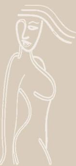
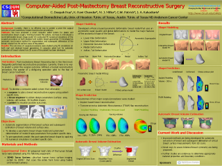
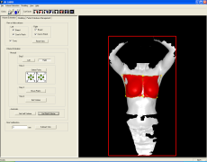
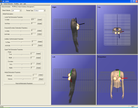
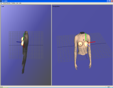
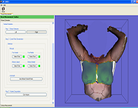
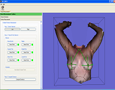
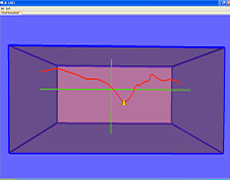

Masters Thesis Topic -- Computer-Aided Breast Reconstructive Surgery
Purpose: To develop a computer-assisted system that will enable a surgeon to preoperatively plan the entire breast reconstruction surgical procedure using patient-specific data, and also allow the patient to view possible outcomes and communicate her preferencess to the surgeon. The ultimate objective of our work is to develop the computational framework that integrates imaging and biomechanical data to accurately predict changes in the three-dimensional breast shape resulting from any reconstructive procedure. |
 |
Background: Breast cancer is the second most frequent cancer diagnosis among American women today, after skin cancer and Post-mastectomy Breast Reconstruction is the third most frequently performed reconstructive procedure, superseded only by tumor removal and hand surgery. Currently, there are no methods that would predict the outcome of the surgery. The psychological distress that accompanies a lump found in the breast and the subsequent mastectomy is compounded by the limitations of contemporary reconstructive procedures. Without a trusted reconstruction procedure, the specter of a disfiguring operation adds to the fear. The goal of this project is to develop a robust predictive methodology and computational frameworks for post-mastectomy breast reconstructive surgery to replace the trial and error method currently practiced and consequently reduce the health care costs by cutting down the need of numerous corrective surgeries. Collaborators: Dr. Charles Patrick, University of Texas MD Anderson Cancer Center Dr. Krishnaswamy Ravi-Chandar, University of Texas - Austin Dr. Michael Miller, University of Texas MD Anderson Cancer Center Development Environment: C++, MFC, QT, OpenGL , VTK, ITK, OpenMesh | |
Outreach Material:  | |
Associated Publications:
| |
{kind=link}
     